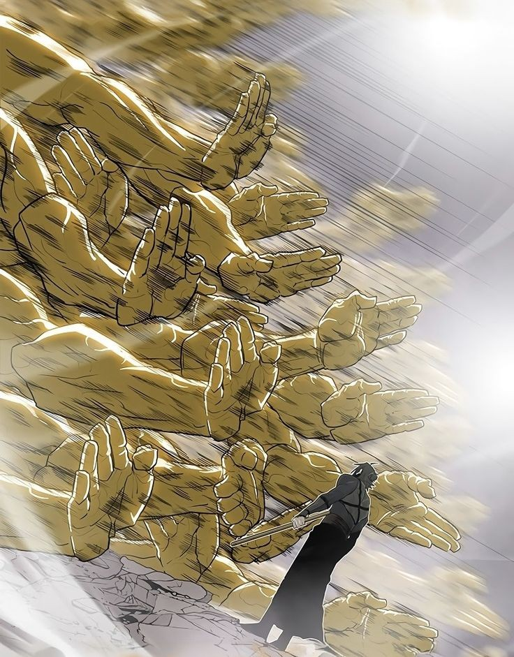
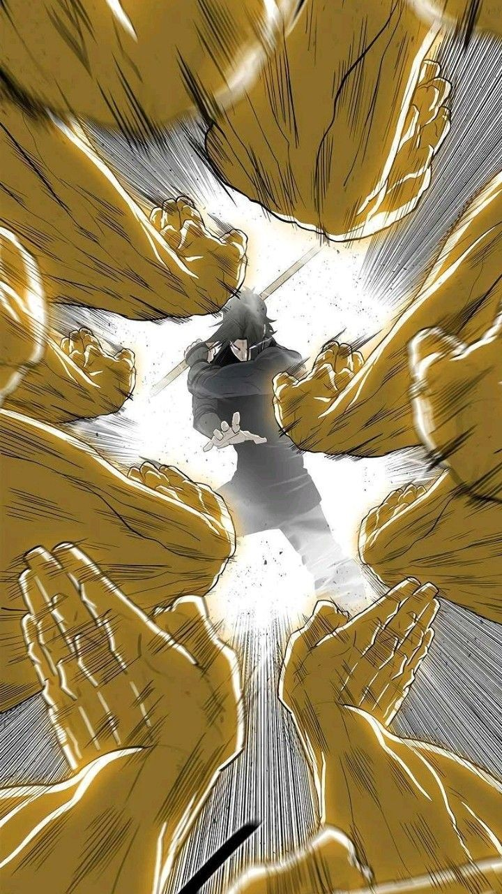
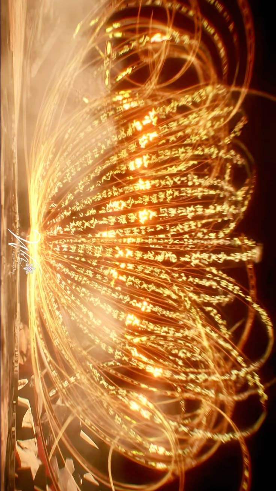

| Faisal | the Grand Angel of Servitude the Bound Flame He Who Kneels at Creation’s Edge Celestial, the Midreach Choir, the Oath-Keepers as of the Plane of Fate, the day he taught Muken the sixth Work and withheld the seventh |
| Epithet | God’s Bane the Choirs’ own name for him before the Host broke, the overseer of the planes; mortals say the Bound Flame, and the shrine-stalls of the south sell him as the Kneeling Angel on tin medals with the wings on the wrong way up |
| Concept | Every promise anybody ever kept is a great gold hand, and he catches the whole world with them. |
| Stat line | Stage XII Emanation, the highest a Celestial can stand · Grandmaster (Flawless) Level 396 · Strained under the Lawbell’s weight · Oathbearer Fate XII Mastered, V · Spirit Studied 25%, II · Body Studied 10%, II · Lenses: none of the Sixty; he works the Host’s sung law, Order · yield (η) 0.85 |
| Combat grammar | Open hand; he catches, holds and presses, and he has never once closed a fist to strike first |
| Aura and sound | Vow-Light, a warm heavy gold like late sun through honey, with a pale silver line under it where his wings meet his back sound: a great bell heard from very far off, under water, and under that a held breath |
| How he moves | He kneels: one knee down, one hand flat on the ground beside it, the head bowed and the white hair fallen forward, and the weight on him goes down through the knee into whatever is under it. |
| Stack | sustainable means of 375 in Resilience and 300 in Harmonics, 200 to 275 in Vitality, Ardency, Gnosis and Dominion, 112 and 125 in Dexterity and Tempering cap two steps on the hidden scale over the sustainable figure layers: I DO NOT LET THINGS FALL lifts Anchoring and Fortitude two steps while he is catching, which fills the cap by itself; inside OTHSAL a kept oath is worth one step of Oath and Anchoring to whoever keeps it, him included, and adds nothing to him while he is already catching; no vow of his own in force, because he carries everyone else’s |
| Releases | none, not even Fate’s One; a Celestial’s Crystal was anchored, not grown, and his Domain is the only thing in him that grew, opened by a spoken call bonded weapon: none; he carries no weapon and has not since the Bell cracked |
| Domain | OTHSAL · the Position Held, a Covenant Domain, the only one in the Midreach Choir’s recorded history |
| Kit | close plate of pale silver, scratched, dulled and never polished, a line of gold from the throat, a laurel cuff and a chain of gold leaves at one ear, no weapon of any kind, and the piece people talk about first: the Midreach plate, Mythic, which closes on him out of the air |
| Voice | ”I do not stand because I am strong. I kneel, because I must never fall.” speaker type: an eleven-thousand-year-old keeper of oaths who speaks slowly, finishes every sentence, and has never in his existence said a thing he did not mean |
| Field | Value |
|---|---|
| Full Name | Faisal; his Lawbell-name is unrecorded |
| Pronunciation | fy-SAHL |
| Titles | Grand Angel of Servitude the Bound Flame, which is a mortal coinage and breaks the Host’s own idiom on purpose He Who Kneels at Creation’s Edge Grand Angel of the Midreach Choir, the only one there has ever been |
| Age | Sung at Midreach in answer to an unwitnessed Vow; about eleven thousand years of Oath-service before the Bell cracked, and seven centuries kneeling since |
| Realm / Faction | The Celestial Host, the Midreach Choir; since the Shattering, no one’s but the edge |
| Refusal | He will not let a thing fall that he can catch, and he will not stand up |
| Conviction | An oath sworn on honor and kept is the heaviest thing in the world, and somebody has to carry the weight of all of them |
| Class | Oathbearer · gives: the kneel, a posture that passes a load through the body into the ground, and the hearing of every oath sworn on honor · shapes: Resilience and Harmonics first, and Dexterity last · evolved from: Tally-Keeper, the clerk’s class every Midreach Celestial is Sung into, on the morning he went to the edge and took the Bell’s weight on his own shoulders; it evolves with his Fate Mastery |
| Level | 396; it holds Emanation (320), and no Residual Strain builds in him short of 400 |
| Mastery | Fate V, Weaver: the lead, held with the Works he keeps and teaches for a grip · Spirit II, Answerer: Studied, two rungs behind the lead and capped there · Body II, Harmonic: Studied, the same |
| Primaries | Vitality 1,600 Ardency 1,800 Gnosis 2,200 Dexterity 900 Harmonics 2,400 Resilience 3,000 Tempering 1,000 Dominion 1,416 Pool 14,316, all spent |
| EU Reserve | 311,710,908 EU |
| Flux Density | 20,000,000 EU/g |
| AU/s | 17,000,000 · empties in 18.34 seconds at full output; he has not been at full output since the Bell |
| Peaks | Oath and Anchoring, beyond anything else alive; Empathy and Stability; Perception, which hears every oath sworn on honor from the edge of creation |
Traits
Full accounts: Faisal — Abilities
Every Trait reads at his lead Mastery, Fate V.
| Trait | Kind | Source | Path and Form | Gates | What it does | Limit | Tell | Cost | Counter | Numbers |
|---|---|---|---|---|---|---|---|---|---|---|
| VOW-LIGHT | Inherited | — | Path Fate · Lens Order, the Host’s sung law, no Wellspring · Form Bind | none written | The warm heavy gold he gives off. Near him a lie sticks in the throat, and people find they want to tell him things. | It makes a lie cost and does not detect it; a man willing to pay can still lie to him, once. | People near him want to confess. | Nothing; no reserve. | Say nothing at all. | — |
| I DO NOT LET THINGS FALL | Primary | — | Path Fate · Lens Order, no Wellspring · Form Call, a kept oath called up as a hand | none written | Whatever is falling within his reach, a bird, a boy, a city wall, there is a gold hand under it before he has decided anything. | He can catch, and hold, and set down; he does not strike first, and a thing that is not falling he can only stand in front of. | A hand is already under you. | — | Make him choose which of two falling things to catch. | No reserve for the catch; Anchoring and Fortitude two steps high while he is catching |
| THE BOUND FLAME | Secondary | — | Path Fate, the load carried through his own body · Lens Order, no Wellspring · Form Bind | none written | He kneels under the weight of every oath in the world so that it does not come down on what is underneath. | The kneeling itself: standing, he is only borrowing time from the weight. | He does not stand up. | Everything he does not spend on it, which is why he comes to Muken only when he is needed and when he can, and why what kneels at the edge does not go far from it. | Make him stand, and keep him standing. | Everything he does not spend elsewhere, for seven centuries |
Skills and Abilities
Full accounts: Faisal — Abilities
Skills
| Skill | Cues / mechanics | Learned where | Priced by (Sub-Stats) | Rank |
|---|---|---|---|---|
| Bearing Load | one knee, one flat hand, the back bowed; let the weight come in and pass it down | the edge of creation, seven centuries | Anchoring, Persistence, Oath | Expert |
| The Open Hand | catch, hold, press, set down; a blow taken on the palm and kept there; never a first strike | eleven thousand years of Oath-service | Anchoring, Fortification | Expert |
| Vow-Cant | the script with no grammar for a lie; writing law in Parunic glyphs on a hand, a ribbon or a fist | Sung into him at Midreach | Stability, Projection | Expert |
| Keeping the Tally | every oath witnessed, kept and broken, in order, and the order remembered | the Hall of Equilibria | Retention, Analysis | Adept |
| Oath-hearing | whether what a man just said was true; which kind of oath bends the world and which breaks under it | the Tally, and the edge | Perception, Acuity | Adept |
| Teaching | one thing at a time, on rope, on a row of small objects; “Again.” | the place where the threads run, with one student | Fluency, Forecast | Adept |
| Practice blades | patient, square, the same block every time | a courtyard of white stone that no longer exists | Reflex, Sequence | Journeyman |
Signature
| Technique | Kind | Mark | Source | Path and Form | Gates | What it does | Limit | Tell | Cost | Counter | Numbers |
|---|---|---|---|---|---|---|---|---|---|---|---|
| I DO NOT LET THINGS FALL | Signature art | — | — | — | — | Every promise anybody ever kept is a great gold hand, and he catches the whole world with them. | Only what was sworn and kept has any weight to give, so the hands can catch, hold, set down and press and have nothing in them that strikes first; a man who promises nothing gives OTHSAL nothing to bind; and Vow-Cant has no grammar for a lie, so he cannot feint, bluff or hide what he is about to do. | — | Every hand he puts out is a hand that is not under the Bell, and the great works are paid in pieces of him that do not come back. | Say nothing and promise nothing. Make him choose between two falling things. Swear two oaths of equal weight that cannot both be kept. Make him stand, and keep him standing. | Sound: a long low hum, like a great bell far off |
| THE STRAIGHT LIGHT | Move of I DO NOT LET THINGS FALL | — | — | — | — | One long breath twisted until every strand of it agrees, and the sky cracks from rim to rim and lets down gold light in rods as straight as plumb lines, under which a whole world finds lying hard to think. | — | — | about half of what he came down with, in one breath | — | — |
| FAIETH · the Thousand Hands | Signature Technique | Mastered | Lived | Path Fate · Lens Order, no Wellspring · Form Call | none written | Hundreds of gold palms a man’s height from wrist to fingertip, rushing out in a tide: they catch, they take a blow and hold it, they close on an enemy from every side and press him to his knees. | The hands only hold, catch and press; there is no fist among them that strikes first. | The air fills with gold palms, open, held out. | About two tenths of one percent of his reserve per breath to keep them out; near 620,000 EU. | The Choir’s old wound: present him two oaths of equal weight that cannot both be kept, and every hand stops where it is. | lasts from full: about five hundred breaths from a full reserve |
| THE AXIOM OF THE KEPT | Technique, with four works under it | — | Lived | Path Fate · Lens Order, no Wellspring, written in Parunic glyphs · Form Bind | none written | One premise set under everything, what is kept, is, with four works called under it: TALETH · the Tally’s Weight, the load passed through him into the ground; DAHLREN · the Walked Boundary, which levels the differences a storm feeds on; SARNRUTH · the Seal Entered, which reads a forced contract and enters it void; OTHANTHA · the Unbroken Line, in which every path is tried and only the kept one stands. | It holds only where he stands. | One word, “Axiom,” and white script running down the back of his right hand. | Each use puts a little of him into the foundation for good; the first took two fingertips, which went clear as glass. | Make him go on paying. | No figure; each use leaves a part of him clear for good, two fingertips the first time |
| TALGRIM · the Order of Precedence | Technique | — | Lived | Path Fate · Lens Order, no Wellspring, written [Len] Line, [VaM] Moment, [Ho] Order · Form Bind | none written | He cannot stop a thing happening, and he can choose what order things happen in. | It changes order and nothing else. | The rhythm of the room goes ragged and blood runs from the corners of his eyes. | The rearrangement by hand of a hundred thousand moments a breath, and the small vessels of his eyes, which burst and run. | Patience: a patient enemy learns any new rhythm. | No figure; at a Domain’s scale, a hundred thousand moments a breath |
| DIVINE FIST · PARU 86 · COMBINATION | Last Technique | — | Lived | Path Fate · Lens Order, with the hope of mortals poured in where the Crystal was · Form Call, the hands, and Bind, the sentence | none written | Every open hand closes for the first time in eleven thousand years: eighty-six fists written over in burning law, one down the center, one hauling from behind, eighty-four from every side. | His own refusal, which held even here: the fists closed only on one who had already struck first. | Every open palm closes at once, and he has to break his own Crystal to do it. | The Crystal and everything after. | The plainest on the card, which is not to strike first. | fists: eighty-six fists on fourteen stations, two and eighty-four; the price is the Crystal · each hand: a man’s height from wrist to fingertip |
Domain
| Release | Kind | Mark | Source | Path and Form | Gates | What it does | Limit | Tell | Cost | Counter | Numbers |
|---|---|---|---|---|---|---|---|---|---|---|---|
| OTHSAL · the Position Held | Covenant Domain | — | — | Path Fate, Mastered: a claim on what a spoken word is worth · Lens Order, no Wellspring · Form Claim | none written | A sky-wide lotus of gold script, every kept oath written out, and inside it a promise has weight: keep it and stand taller, break it and drop. | It binds what is sworn and nothing else; a man who promises nothing walks through it untouched. | — | About one percent of his reserve to open, near 3,100,000 EU, and a slow bleed while it stays open, and whatever breaks it breaks him along the lines it grew from. | Silence walks through it. Its deeper counter is the one every Midreach Celestial fears: two oaths of equal weight that cannot both be kept, sworn inside it, seize the Domain and him with it. | one step of Oath and Anchoring to whoever swears inside it and keeps it |
Physical Description
| Feature | Description |
|---|---|
| Form | In the place where the threads run he is a shape of light kneeling, the bright places where eyes would be, the great wings standing from his shoulders, broken and mending, and he is so tall that standing he must look down a long way to meet a man’s face. |
| Face | When he takes a face to speak to one, it is this: a tall, long-boned man with dark brown skin and a long, still, fine-cut face, the mouth closed, the eyes a burning gold under white lashes and heavy lids, kept half lowered as if out of courtesy. |
| Hair | His hair is white, very long and very fine, loose to the small of his back and lifting a little all the time as if a wind came up from below him. |
| Ear jewelry | A gold cuff worked like laurel leaves climbs the rim of his left ear, and a long gold earring hangs from it in a falling chain of leaves. |
| Armor | He wears close plate of pale silver, scratched and dulled with use and never polished, with a high standing collar edged in gold and a line of gold running down from the throat, and nothing on it anywhere that shines but the gold. |
Voice
| Field | Value |
|---|---|
| Speaker type | a keeper of oaths who has never lied |
| Notices first | whether what a man just said was true |
| Sentence length | slow, finished, every one of them; short when it is an instruction |
| Contractions | never |
| Habit | hands clasped behind his back when he stands; the bowed head when he kneels; “Again.” |
| Never says | anything he does not mean; Vow-Cant has no grammar for it and he has forgotten any other way to speak |
| Sample line | ”She swore what she believed you would do. What you do is yours.” |
Equipment
| Item | What it is | Grade | Rarity | Rung | Bonded |
|---|---|---|---|---|---|
| The Midreach plate | full plate of pale silver | SSS | Mythic | Landbreaker | no |
| The laurel cuff and leaf chain | gold ear-cuff and long earring, left ear | — | Rare | — | — |
| The empty rest | what he carried before the Bell cracked | none | none | — | — |
| Item | Details | Look | Maker’s mark | Shown off | What people say | Price |
|---|---|---|---|---|---|---|
| The Midreach plate | full plate of pale silver: greaves, cuisses, long fauld, breastplate, high standing collar stamp Found | pale silver gone dull with ages of use, every plate scored and never once polished, a line of gold running down from the throat and gold along the collar’s edge, the only things on it that shine it stands by the window in the Hall of Equilibria when he is not in it, and it is not carried: what has been sworn to a purpose comes when it is wanted, the pieces rising off the stand and closing round him, the collar last, under the jaw the left shoulder rides a finger low, over the root of the broken wing no past owners; no one else has ever closed it | no proof-mark; it was Sung, and no assay has ever been let near it | he doesn’t, and he wears eleven thousand years of scratches into rooms full of people in gilt | Sancta Lux pays a bishop’s price for any sliver of it, so the shrine-stalls of the south are thick with scratched silver sold as the Bound Flame’s, and every piece of it has failed the first person who bet a life on it | — |
| The laurel cuff and leaf chain | plain | a cuff worked like laurel leaves climbing the rim of the ear, and from it a falling chain of smaller leaves, each one different the Tally records every oath for eleven thousand years and says nothing about who gave him these, which in the Midreach is a statement | — | — | the Choir’s own whisper says Verantha, and nobody in the Choir will say it twice | — |
| The empty rest | unrecorded | beside the plate’s stand in the Hall of Equilibria there is a second rest with nothing on it, and he has not carried a weapon since the Lawbell | — | he leaves it empty where anyone can see | Sancta Lux has eleven theories and a programme for each | — |
Lore
Full account: Faisal — Lore
Ties
| Person | Who they are to him |
|---|---|
| Muken Moto | whom he caught, and taught six Works |
| Yukazuri Moto | whose last oath he heard |
| Gimbzo | who struck everything as hard as he could and broke himself |
| Malakar | who cracked the Bell and has come to the edge to break him |
| Lucius | who drew on his Numen |
| Sancta Lux | who are still looking for him |
| Verantha of the Unbroken Tally | of his Choir, whose entry stops mid-Tally |